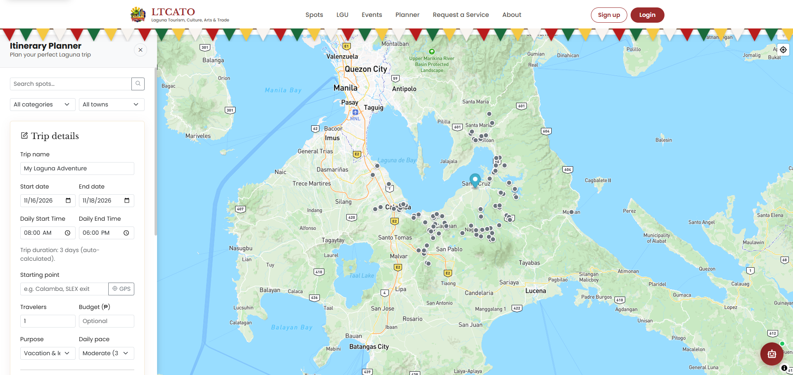
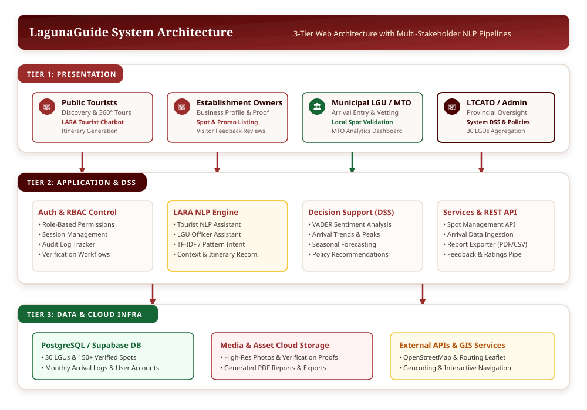
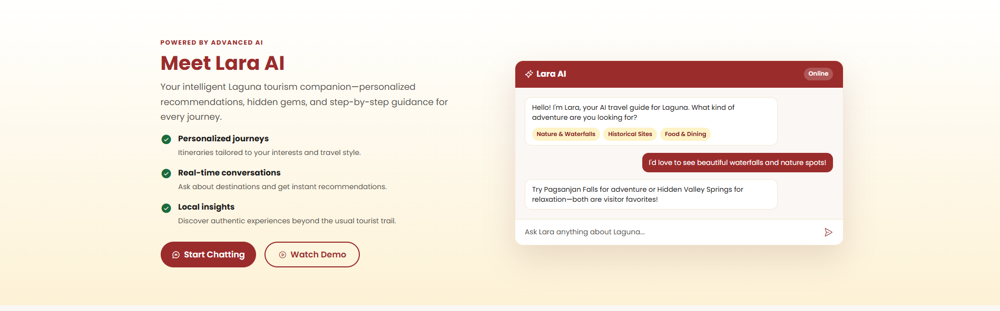
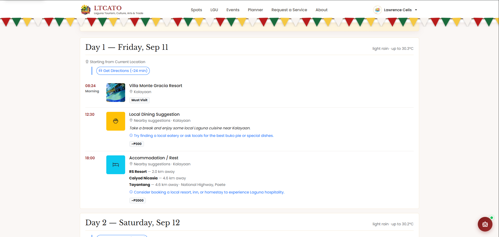
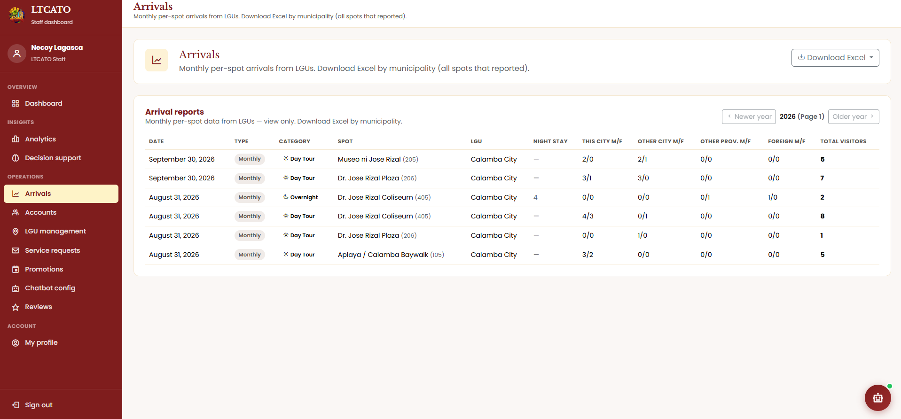
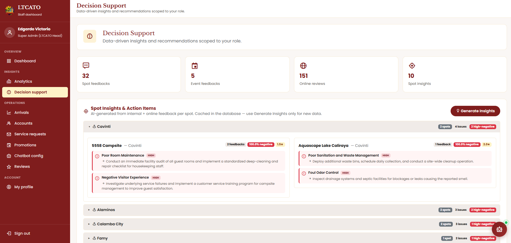
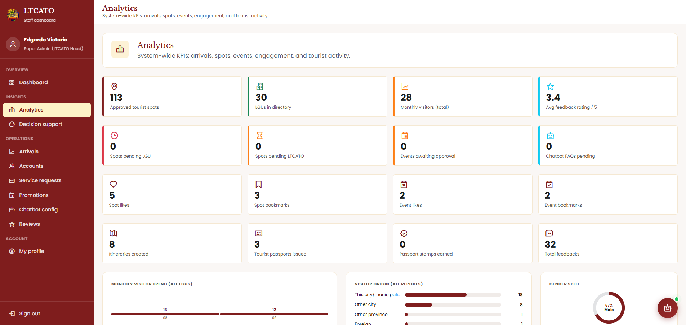

LagunaGuide
An Integrated Web-Based Tourism Promotion, Tourist Monitoring, and Decision Support System with NLP-Based Multi-Stakeholder Chatbots for LTCATO
A unified provincial digital ecosystem connecting all 30 Laguna LGUs, over 150+ verified attractions, accredited establishments, and provincial planners into one intelligent platform for real-time arrival compliance, algorithmic itinerary planning, and AI review sentiment forecasting.

What LagunaGuide Does
Unifying fragmented tourism promotion and automating monthly arrival compliance across the Province of Laguna.
The Province of Laguna is home to 30 Local Government Units (6 Cities and 24 Municipalities), each boasting unique historical heritage, cultural festivals, volcanic lakes, and ancestral craft traditions. However, tourism administration in the province was previously constrained by fragmented promotional channels, manual pen-and-paper query handling, and delayed monthly tourist arrival consolidation submitted via physical mail or unstandardized spreadsheets to the Laguna Tourism, Culture, Arts and Trade Office (LTCATO).
LagunaGuide addresses these structural hurdles through an integrated web ecosystem. It establishes a standardized digital ingestion pipeline for Municipal Tourism Officers (MTOs) to log domestic and foreign arrival counts under Department of Tourism (DOT) standards, deploys a dual-role Natural Language Processing (NLP) chatbot named LARA to handle both public tourist inquiries and administrative officer workflows, and equips provincial decision-makers with VADER review sentiment analysis and seasonal influx forecasting.
Public Tourists
Empowers travelers with verified provincial spots, algorithmic travel circuits, and instant AI guidance.
- 150+ verified attractions categorized by district & vibe
- Smart itinerary generator optimized by budget & duration
- LARA NLP chatbot for real-time operating hours and directions
Establishment Owners
Allows resorts, boutique hotels, and restaurants to manage accredited listings and monitor guest feedback.
- Business registration and DOT accreditation verification
- Promotional package updates and operational hour controls
- Visitor sentiment scores and guest review oversight
Municipal Tourism Offices
Digitizes monthly arrival submission across 30 LGUs, replacing delayed physical logbook consolidation.
- Monthly same-day, overnight, and foreign visitor intake
- Municipal attraction vetting and verification approvals
- LARA regulatory guidance for DOT compliance deadlines
LTCATO Provincial Admin
Provides provincial administrators with real-time data aggregation, review sentiment, and policy intelligence.
- 30 LGUs real-time arrival consolidation across 4 districts
- VADER sentiment analysis detecting tourist congestion and issues
- Automated PDF and CSV reporting for Department of Tourism
Research Methodology
Extracted directly from Chapter III of the Capstone Project Manuscript: A descriptive-developmental research design executing 6 Agile development sprints, technical black-box testing, and empirical ISO/IEC 25010 evaluation.
Descriptive Research
Conducted field interviews, workflow mapping, and needs assessments across LTCATO leadership and municipal tourism staff to identify operational bottlenecks in arrival logging and query handling.
Agile Development
Executed sprint-based developmental cycles comprising requirement engineering, 3-tier architecture design, Flask/Python backend API creation, Supabase PostgreSQL modeling, and LARA NLP training.
Black-Box Testing
Subjected all system modules, RBAC authentication security, data ingestion routines, and sentiment algorithms to rigorous functional verification by 10 qualified technical IT testers.
ISO/IEC 25010 Evaluation
Administered standardized survey instruments across 204 active stakeholders to evaluate software quality across 9 characteristics: Functional Suitability, Reliability, Performance, Security, and more.
Agile Software Development Model (SDLC)
Iterative sprint progression applied throughout the developmental phase of LagunaGuide (Section 3.7.1).
Planning
Stakeholder requirement elicitation, feature scoping for 30 LGUs, and feasibility assessment.
System Design
ERD database structuring, 3-tier layered architecture, and UI/UX mockup prototyping.
Development
Backend RESTful API implementation, LARA NLP pipeline training, and VADER sentiment integration.
Testing
Comprehensive Black-Box validation across 10 IT evaluators, boundary tests, and error handling.
Deployment
Production launch on Vercel with PostgreSQL cloud database hosting on Supabase.
Maintenance
Continuous audit logging, arrival database synchronization, and regulatory DOT updates.
Black-Box Technical Testers (Table 2)
10 qualified IT professionals who conducted functional black-box verification (Manuscript Section 3.3):
| Tester Name | Current Position / Specialization | Experience |
|---|---|---|
| Elchier Santos Lontoc | Chief Technology Officer | 7 years |
| Ferdinand T. Celis | Website Developer | 6 years |
| Mike Angelo Matrido | Information Security Officer | 13 years |
| Roswell James Vitaliz | IT Specialist - Cybersecurity | 5 years |
| Christine Nicole Valdellon | Junior Flutter Engineer | 5 years |
| Jovert A. Lobinia | Technical Support Specialist | 5 years |
| Raina Gemanel | Web Developer | 4 years |
| Jomari S. Borje | IT Instructor | 2 years |
| Juliemar Añonuevo | Marketing & Tech Strategist | 3 years |
| John Lloyd E. Ramos | Software Developer | 4 years |
Evaluation Sampling Design (Table 3)
Total enumeration and Slovin's formula (7% margin of error) across 204 stakeholders (Manuscript Section 3.4):
| Stakeholder Category | Sample Size | Percentage |
|---|---|---|
| Public Tourists (Local & Foreign) | 92 | 45.10% |
| Municipal Tourism Office (MTO) Staff | 90 | 44.12% |
| LTCATO Provincial Staff | 15 | 7.35% |
| Establishment Owners / Managers | 6 | 2.94% |
| LTCATO System Administrator | 1 | 0.49% |
| Total Evaluated Sample | 204 | 100.00% |
3-Tier Layered Architecture
Decoupled presentation tier (Leaflet GIS, modern HTML5/ES6), application tier (Python Flask, LARA NLP, VADER Sentiment), and Supabase cloud data storage. Click the diagram to inspect in full resolution:

System Modules & Live Interfaces
Authentic full-resolution interface captures of LagunaGuide across all functional operational modules. Click any screenshot or button to view full resolution without cropping.
Attraction Explorer & Map
Interactive geospatial discovery portal indexing over 150 verified attractions across all 30 LGUs, featuring category filtering (eco-tourism, cultural heritage, lakes, culinary), detailed spot profiles, and verified ratings.

LARA Multi-Stakeholder Chatbot
Dual-role Natural Language Processing conversational assistant. Delivers personalized spot recommendations and travel guidance to tourists while assisting municipal officers with reporting guidelines.

Smart Itinerary Generator
Optimizes multi-stop trips across Laguna by factoring in budget constraints, operating schedules, proximity clustering, and travel durations across the province's four legislative districts.

MTO Tourist Arrival Ingestion
Centralized intake portal where Municipal Tourism Officers submit monthly visitor arrivals categorized by domestic, foreign, same-day, and overnight stays, replacing physical paper logs.

Decision Support & Sentiment
Integrated VADER sentiment analysis engine classifying tourist reviews into positive, neutral, and negative themes, paired with predictive seasonal arrival surge modeling.

Provincial Analytics Command Center
High-level provincial monitoring dashboard tracking district compliance rates, annual arrivals (1.48M+), verified attraction inventories, and Department of Tourism report export status.
Software Quality & Evaluation
Validated by 204 stakeholders across the Province of Laguna using the international ISO/IEC 25010 software quality standard.
Black-Box Verification
100% Pass RateConducted by 10 professional IT evaluators with 2–13 years industry experience across all defined test scenarios:
- Authentication and Role-Based Access Control (RBAC) integrity
- MTO batch arrival data ingestion and validation filters
- LARA NLP intent recognition, Taglish parsing, and fallback safety
- VADER review sentiment scoring and trend calculation
- PDF and CSV export generation under DOT compliance specs
Research Team & Institutional Partners
Undergraduate researchers from the College of Computer Studies, Laguna State Polytechnic University – Santa Cruz Campus.
Capstone Thesis Adviser
Dr. Mia V. Villarica, DIT — Associate Dean, College of Computer Studies, Laguna State Polytechnic University – Santa Cruz Campus.
Agency Partner & Oral Defense Panel
Client Beneficiary: Laguna Tourism, Culture, Arts and Trade Office (LTCATO), Provincial Capitol Compound, Santa Cruz, Laguna. Headed by Edgardo "Egay" Victorio (OIC) and Arnold Pany (Arrival Monitoring).
Oral Defense Evaluation Grades: 96%, 90%, 85%, 95%
Deliverables & Research Access
Access the live production platform, source code repository, complete manuscript, and formal academic citation.
Live Production System
Explore the deployed system live on Vercel with active spot filtering and arrival intake.
new-ltcato.vercel.app →Source Code Repository
Access the full stack frontend, Flask backend APIs, and database migrations on GitHub.
View GitHub Repo →Capstone Manuscript
Read the complete 5-chapter research document, survey instruments, and panel approvals.
Read PDF Document →System Video Demo
Watch a complete video walkthrough demonstrating the four stakeholder workflows.
Watch Video Walkthrough →Camunias, K. S. B., Celis, L. T., & Francia, M. A. (2026). LagunaGuide: An integrated web-based tourism promotion, tourist monitoring, and decision support system with NLP-based multi-stakeholder chatbots for LTCATO (Undergraduate Capstone Project, Laguna State Polytechnic University). Santa Cruz, Laguna, Philippines.